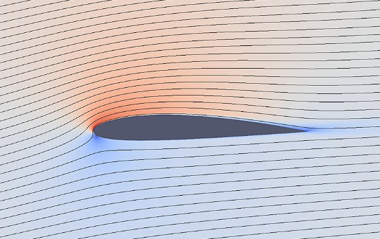
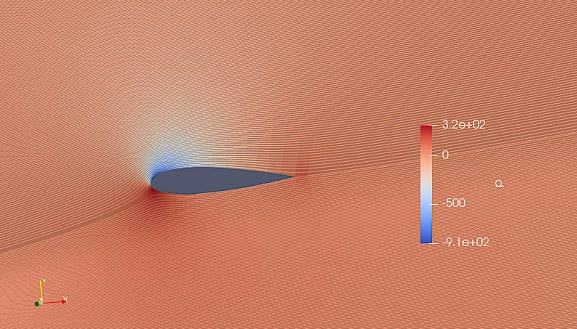
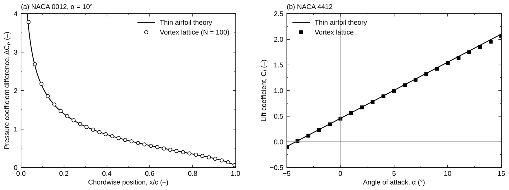

Airfoil Aerodynamics: Vortex Lattice to CFD

OpenFOAM streamlines around a NACA 0012.

Pressure field from the same OpenFOAM run.

My vortex lattice solver against thin airfoil theory: (a) load along the chord, (b) the lift curve.
I wrote a thin-airfoil solver in MATLAB using a vortex lattice method: the camber line becomes 100 discrete vortices, flow tangency is enforced at control points, and a single linear solve gives lift, moment and center of pressure for any NACA 4-digit airfoil. I wrapped it in a MATLAB app so you can change the camber and angle of attack and see the answer right away, checked it against thin airfoil theory and XFOIL, and then ran OpenFOAM (RANS, Spalart–Allmaras) to see where a fully turbulent CFD model starts to disagree with linear theory at low angles of attack.
| Airfoil | Vortex lattice | Thin airfoil theory | XFOIL | Error |
|---|---|---|---|---|
| NACA 2412 | −2.062° | −2.077° | −2.080° | 0.86% |
| NACA 3412 | −3.101° | −3.103° | −3.163° | 1.96% |
| NACA 4412 | −4.147° | −4.142° | −4.214° | 1.58% |
Zero-lift angle of attack: every airfoil within 2% of XFOIL.